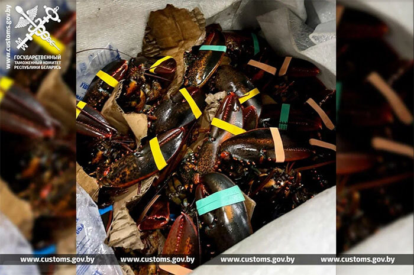
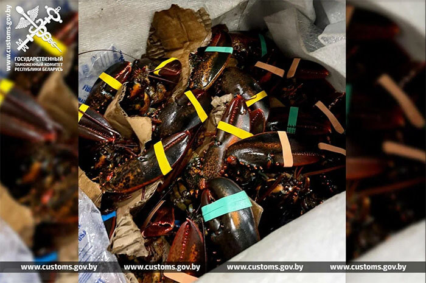

«ЗИС-110» как культурная ценность
Автомобиль «ЗИС 110», являющийся культурной ценностью, пытались вывезти из Беларуси без необходимых документов. За рулем машины был россиянин, он направлялся в Литву. Он выбрал зеленый коридор, подтвердив, что у него отсутствуют товары, подлежащие обязательному декларированию.
При проведении таможенного контроля сотрудники таможни обратили внимание на дату выпуска авто, указанную в техническом паспорте, - 1947-й. Между тем транспортные средства, произведенные до 1 января 1951 года, относятся к категории культурных ценностей.
Стоимость незадекларированного раритета - примерно 610 тысяч рублей.